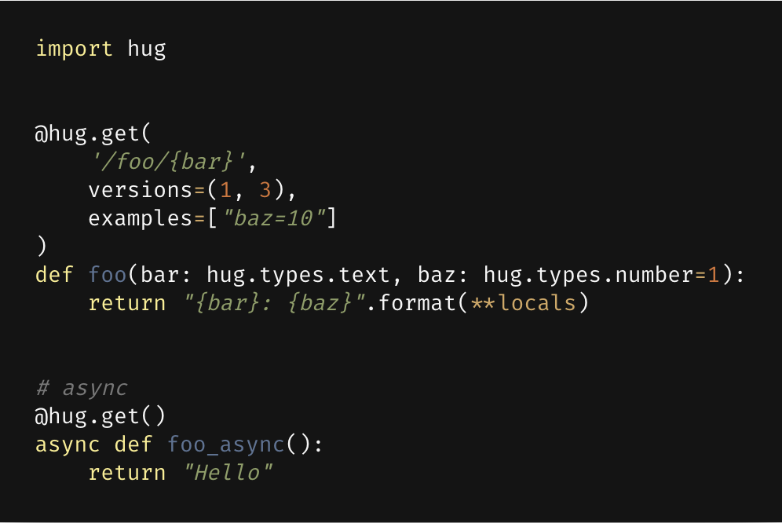
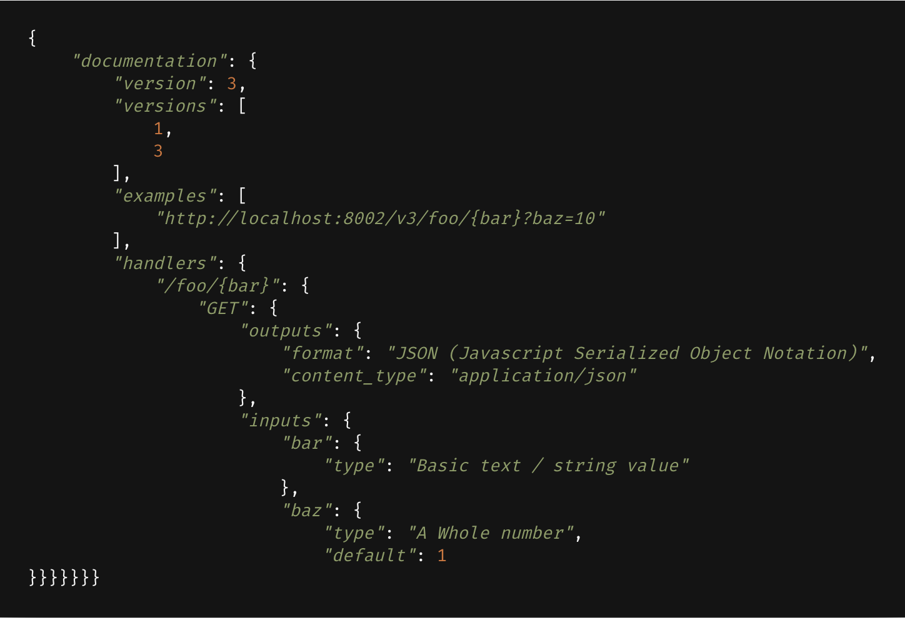
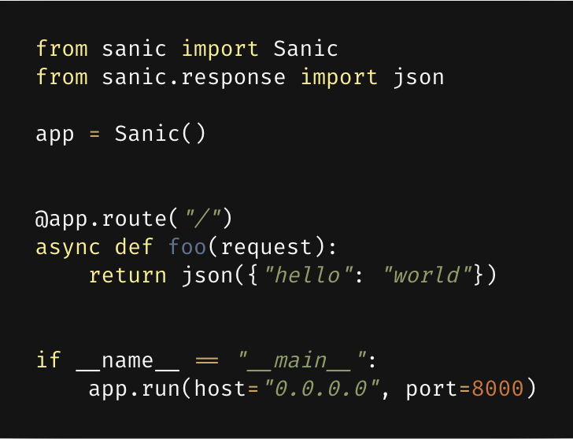
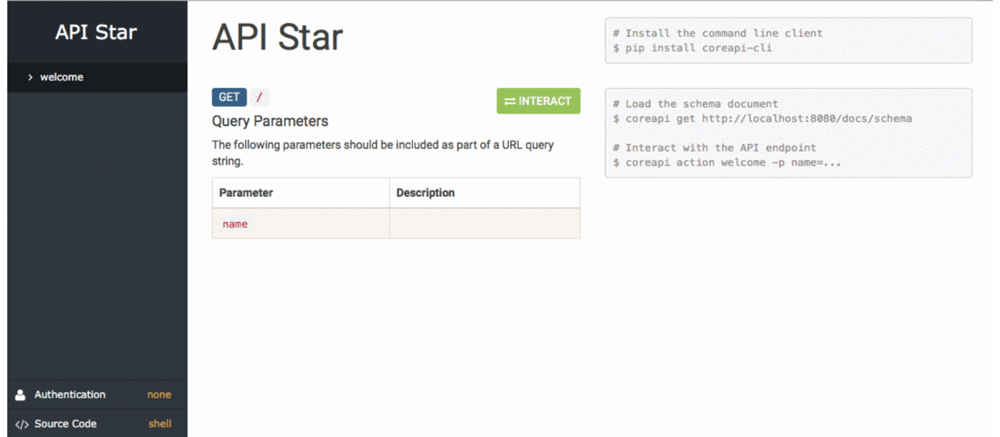

Python Web Frameworks in the Age of Microservices
Old Faithful
Photo by Emily Campbell on Unsplash


Road Less Traveled
Photo by Gabriel Garcia Marengo on Unsplash


- bare-metal Python web API framework for building high-performance microservices, app backends, and higher-level frameworks
- py2.6 / py3.6 / pypy2 / pypy3
- Rackspace, OpenStack, Opera Software, Linkedin, Wargaming


- Hopefully Useful Guide
- version management
- type annotation powered validation
- Falcon ❤ Hug
- ~ docs



- Flask-like Python 3.5+ web server that's written to go fast
- async - uvloop
- blueprints
- class-based views
- ...

üåü
- wsgi or async
- json schema generation
- typesystem for validation
- ~ templating
- ~ authentication
- testing using py.test

`{"message":"Hello, World!"}`
Roundup
Photo by Erlend Ekseth on Unsplash
|
stable |
docs |
speed |
async* |
py2 |
mascot |
| Django |
üëå |
üëå |
üëé |
üëé |
⛔ ** |
üòä |
| Flask |
üëç |
üëç |
ü§û |
üëé |
✅ |
üòë |
| Bottle |
ü§û |
üëç |
üëç |
üëé |
✅ |
üòë |
| Falcon |
üëç |
üëç |
üëå |
üëé |
✅ |
üò≤ |
| Hug |
ü§û |
üëé |
üëå |
üëç |
⛔ |
üòç |
| Sanic |
ü§û |
üëç |
üëç |
üëç |
⛔ |
derp |
| API Star |
üñï |
üëç |
üëç |
üëç |
⛔ |
ü§î |
* out of the box
** not since 2.0 üëè
Q & A
mislavcimpersak.github.io/python-microservices-frameworks-talk
Join @ Discord: Python Balkan